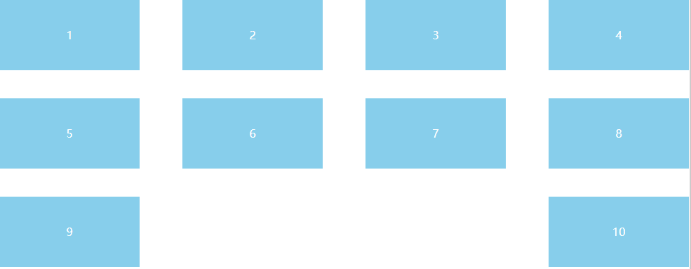

使用flex布局的justify-content: between可以设置两端对齐的布局。在只有单行元素的情况下没有什么问题，但是如果元素有多行，那么最后一行元素的间距可能会和其它行不同。
一般情况下我们希望最后一行元素不要两端对齐，但同时又保留其它行的两端对齐。这篇文章想讨论下如何解决flex两端对齐的布局中最后一行的问题。其实使用JS可以比较方便的解决这个问题，但是这里希望尽量少用JS，至少不读取DOM属性，多用CSS。
目标
理想的“两端对齐”应该是这样的布局：

即除最行一行外两端对齐，最后一行单侧对齐。
方法
flex的space-between是实现两端对齐的最简单方法，但是由于每一行都两端对齐，所以如果最后一行的元素不够填充满一行，也会被拉至两侧。
示例：
1 | <div class="container"> |
1 | .container { |
结果：

对于一行中元素个数固定的场景，可以添加与元素宽度相同但不可见的傀儡元素进行填充。这可能需要js进行计算并创建新的元素加入。
假如一共n个元素，每行s个，那么需要填充s - n % s个傀儡元素。
示例：
1 | <div class="container"> |
1 | .container { |
结果：

对于一行元素个数不定，或者说需要布局随着容器宽度自适应，那么上边的计算傀儡元素格式的攻击就不能用了。如果傀儡不影响视觉效果，比如设置高度为0，那么它有多少个其实无关紧要。所以可以使用能够确保上述效果的傀儡元素的个数。
比如，如果有n个元素，最极端的情况是第一行n-1个，第二行1个，那么需要n-1个傀儡元素来填充第二行。
示例:
1 | <div class="container"> |
把傀儡元素对布局的影响降到最低，比如宽度和外边距设置为0，那么即使傀儡元素出现在第三行也不影响视觉效果。